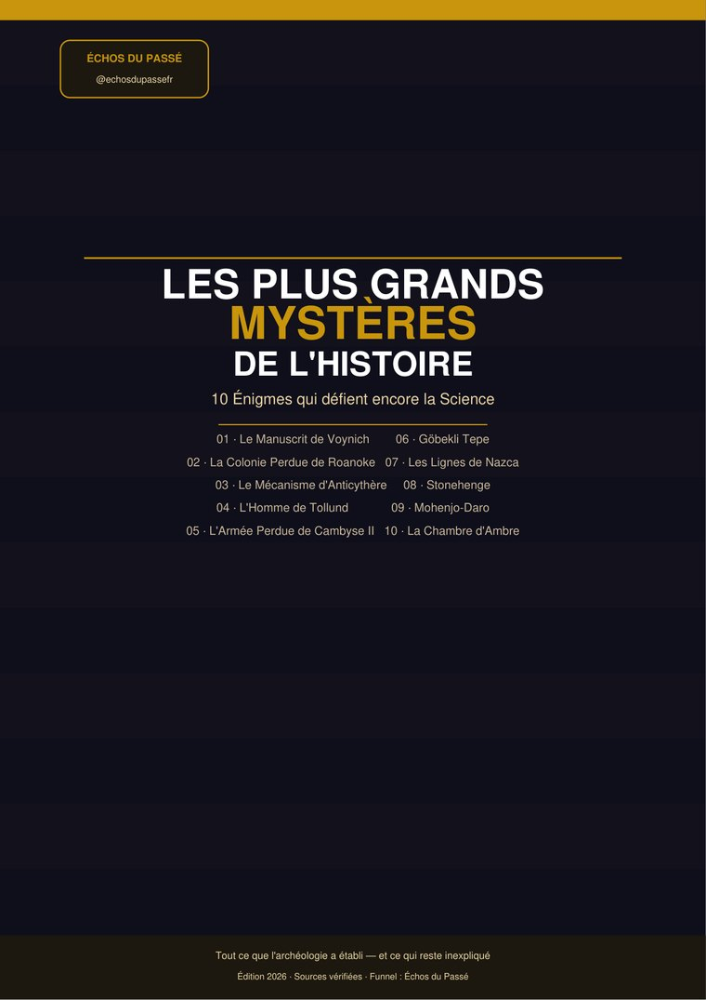
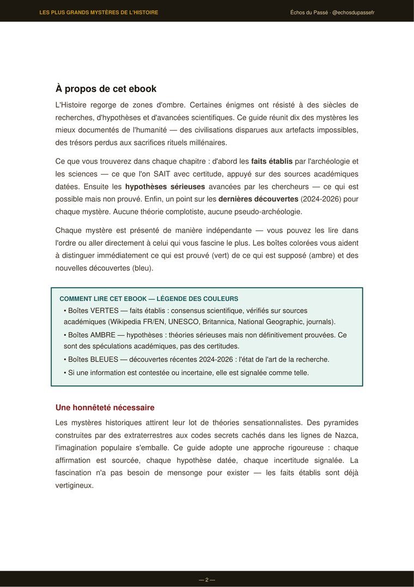
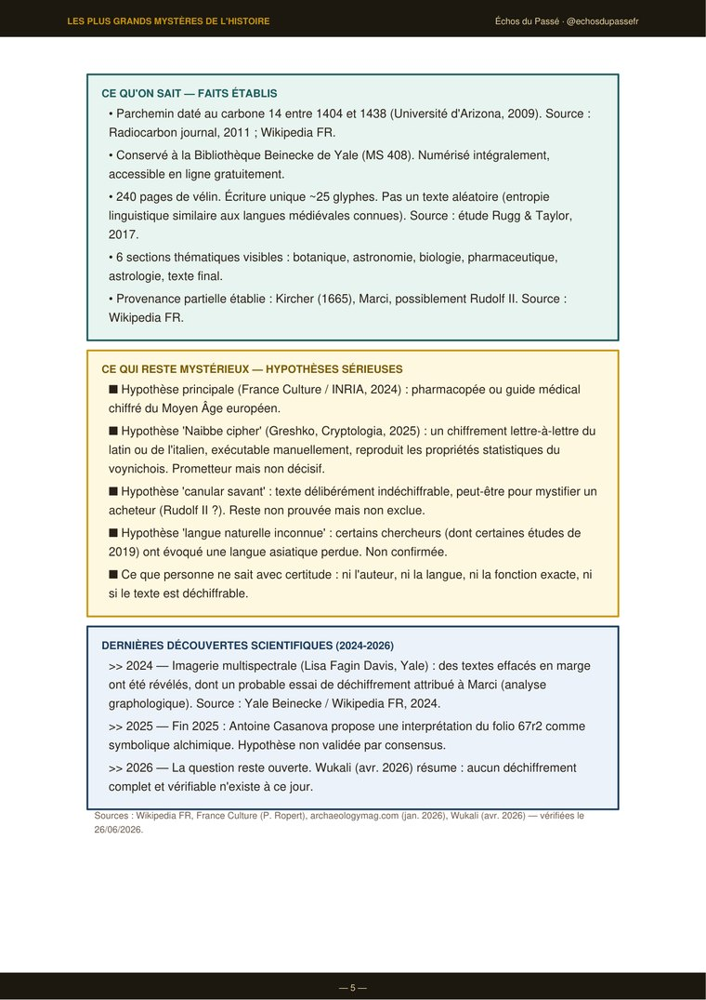
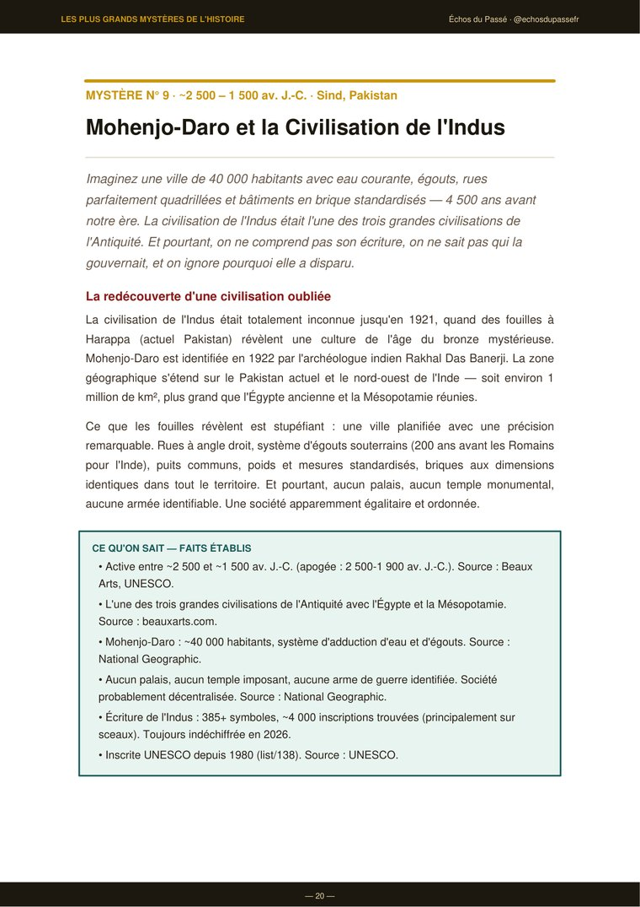

« La fascination n'a pas besoin de mensonge pour exister — les faits établis sont déjà vertigineux. »
10 énigmes historiques parmi les mieux documentées de l'humanité : le Manuscrit de Voynich, la Colonie perdue de Roanoke, le Mécanisme d'Anticythère, Göbekli Tepe, Stonehenge et 5 autres. Pour chacune : les faits établis par l'archéologie, les hypothèses sérieuses des chercheurs, et les dernières découvertes (2024-2026). Zéro pseudo-archéologie, zéro théorie du complot — chaque affirmation est sourcée.
Internet regorge de théories sensationnalistes sur les mystères historiques — extraterrestres, codes secrets, complots. La plupart n'ont aucune base scientifique.
Cet ebook adopte une approche radicalement honnête : chaque fait est sourcé, chaque hypothèse est datée et distinguée de la certitude, chaque incertitude est signalée. Aucune théorie complotiste, aucune pseudo-archéologie.
Chaque mystère est présenté de manière indépendante — tu peux les lire dans l'ordre ou aller directement à celui qui te fascine le plus.
Des chasseurs-cueilleurs construisant le plus ancien temple du monde 6 000 ans avant Stonehenge. Des Grecs concevant un calculateur astronomique 2 000 ans avant l'électronique. Une armée entière disparue dans le désert. Tout cela est vrai, et documenté.
Une légende de couleurs simple, utilisée dans les 10 chapitres.
Ce que tu vois ici, ce sont de vraies pages du PDF — pas une maquette.

Page 2 — Comment lire cet ebook
Page 5 — Mystère 1 : le Manuscrit de Voynich
Page 20 — Mystère 9 : Mohenjo-DaroContexte historique · faits établis · hypothèses sérieuses · dernières découvertes, pour chacun.
240 pages d'une écriture inconnue, plantes impossibles à identifier. Défie les cryptographes depuis un siècle — toujours indéchiffré en 2026.
Le gouverneur revient après 3 ans. Aucun corps, aucune lutte, un seul mot gravé : CROATOAN. L'un des plus vieux cold cases américains.
30+ engrenages de bronze prédisant éclipses et positions planétaires. Découvert dans une épave en 1901 — plus de 2 100 ans d'âge.
Découvert en 1950, pris pour un meurtre récent. Conservé par la tourbe. Pendu — sacrifice rituel ou exécution ? Les deux hypothèses coexistent.
Une armée perse aurait disparu dans le désert occidental égyptien. Aucun os, aucune arme retrouvés à ce jour. Tempête de sable — ou légende ?
Des chasseurs-cueilleurs sans poterie ni métal ont construit le plus ancien complexe monumental humain connu. Seulement ~5 % du site est fouillé.
Des dessins géants visibles uniquement du ciel — un colibri de 93 m, une araignée de 46 m. Tracés par un peuple qui n'avait jamais volé.
Des blocs de 25 tonnes transportés sur des centaines de km sans roue ni métal. Une étude de 2024 relance la question du « comment ».
Eau courante, égouts, rues planifiées — 200 ans avant les Romains pour l'Inde. Écriture toujours indéchiffrée, disparition inexpliquée.
Volée par les nazis en 1941, disparue lors de la chute de Königsberg. 80 ans de recherches internationales, toujours introuvable.
Reçois un extrait gratuit de l'ebook + nos conseils sur les plus grands mystères de l'Histoire, par email.
Merci ! Tu vas recevoir l'extrait gratuit par email très vite.
Pas de spam. Désinscription en 1 clic.
Téléchargement immédiat · PDF lisible sur tous les appareils · 9,90 €
🛒 Voir le panier🔒 Paiement sécurisé PayPal ou carte bancaire — aucun compte requis · Garantie satisfait ou remboursé 30 jours (voir FAQ) · Aucune livraison à attendre.
Envie d'Histoire en attendant ? Abonne-toi à Échos du Passé ↗